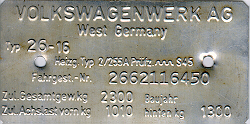

| Chassis plate |
|  |
| chassis plate. |
| The chassis plate is fixed behind the passenger seat. The plate shown here is a regular chassis plate fixed in buses that were made and assembled in Germany. Not every bus had this plate when it left the factory. Here are several reasons:
|
| The vehicle type is mentioned on the plate after the word 'Typ'. In most cases this number is the same as the first two numbers in the model code (see M-plate). There are a few exceptions. Sometimes a specific M-code is mentioned after the type number. For example: 'Typ 23-517' is a VW Kombi (type 23) with Westfalia campmobile interior (M-code 517). |
|
Vincent Molenaar last update: 16.12.2005 |